The following objects are masked from 'package:stats':
filter, lag
The following objects are masked from 'package:base':
intersect, setdiff, setequal, union
library(ggplot2)library(naniar)library(VIM)
Loading required package: colorspace
Loading required package: grid
VIM is ready to use.
Suggestions and bug-reports can be submitted at: https://github.com/statistikat/VIM/issues
Attaching package: 'VIM'
The following object is masked from 'package:datasets':
sleep
library(corrplot)
corrplot 0.95 loaded
library(tidyr)library(knitr)set.seed(5100)
I started with reading in the data and dividing it into two data frames: one that contains the High Income group and one that excludes the High Income group.
clean_df =read.csv('data/processed-data/gender_inequality_and_economic_indicators_dataset_clean_final.csv')#df with high income groupclean_df_with <- clean_df#df without high income groupclean_df_without <- clean_df %>%filter(Region !="High income: OECD")#row countnrow(clean_df_with)
[1] 190
nrow(clean_df_without)
[1] 156
#unique regionsunique(clean_df_with$Region)
[1] "South Asia" "Europe & Central Asia"
[3] "Middle East & North Africa" "Sub-Saharan Africa"
[5] "Latin America & Caribbean" "High income: OECD"
[7] "East Asia & Pacific"
unique(clean_df_without$Region)
[1] "South Asia" "Europe & Central Asia"
[3] "Middle East & North Africa" "Sub-Saharan Africa"
[5] "Latin America & Caribbean" "East Asia & Pacific"
#aggr(clean_df, col = c("skyblue", "red"), numbers = TRUE, sortVars = TRUE, gap = 3, cex.axis = 0.7)
Once I saw that the economic indicators were missing values, I decided that filling with the median would work best, as to not skew any calculations
##fill missing values with median#select columnscolumns_to_impute <-c("Foreign_direct_investment", "agriculture_forestry_value_added", "GNI.per.capita", "net_barter_terms_of_trade_index", "gdp_per_person_employed")#check for NAs in the economic indicators groups by Countryna_by_economy <- clean_df %>%select(Economy, all_of(columns_to_impute)) %>%#group_by(Economy) %>%summarise(across(everything(), ~sum(is.na(.)), .names ="NA_{col}")) %>%arrange(desc(across(starts_with("NA_"))))#apply median calculationfor (col in columns_to_impute) { clean_df[[col]][is.na(clean_df[[col]])] <-median(clean_df[[col]], na.rm =TRUE)}#verify missing values were filledfilled_summary <-colSums(is.na(clean_df[columns_to_impute]))filled_summary
#summary stats for marriage datamarriage_summary <- clean_df %>%group_by(Region) %>%summarise(Mean_Marriage_Score =mean(MARRIAGE, na.rm =TRUE),Median_Marriage_Score =median(MARRIAGE, na.rm =TRUE),SD_Marriage_Score =sd(MARRIAGE, na.rm =TRUE) )print(marriage_summary)
# A tibble: 7 × 4
Region Mean_Marriage_Score Median_Marriage_Score SD_Marriage_Score
<chr> <dbl> <dbl> <dbl>
1 East Asia & Pacif… 86.4 100 20.6
2 Europe & Central … 95.7 100 8.43
3 High income: OECD 95.3 100 11.1
4 Latin America & C… 90 100 13.4
5 Middle East & Nor… 24 20 25.6
6 South Asia 70 70 26.2
7 Sub-Saharan Africa 65.4 80 30.2
I performed some summary statistics of the marriage indicators. East Asia & Pacific, Europe & Central Asia, High Income, and Latin America & Caribbean had significantly high marriage score statistics compared to Sub-Saharan Africa, South Asia and Middle East & North Africa. It’s also important to note the standard deviations so that we are taking into account the actual spread of scores. For example, Although East Asia & Pacific have a significantly high median, their mean is 14 points less and the standard deviation has a spread of 20 points. SUb-Saharan Africa is also a region to take note of with a spread of 30 points.
##distribution of marriage scores#histogramggplot(clean_df, aes(x = MARRIAGE, )) +geom_histogram(binwidth =20, fill ='skyblue', color ='black') +stat_bin(binwidth =20, geom ="text", aes(label = ..count..), vjust =-0.5) +labs(title ="Distribution of Marriage Scores", x ="Marriage Score", y ="Count" ) +theme(plot.title =element_text(hjust=0.5)) +scale_x_continuous(breaks =seq(0, 100, by =20))
Warning: The dot-dot notation (`..count..`) was deprecated in ggplot2 3.4.0.
ℹ Please use `after_stat(count)` instead.
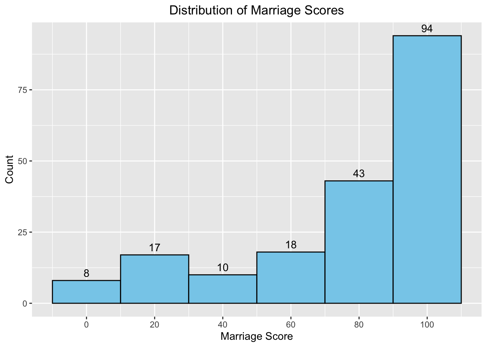
#density plotggplot(clean_df, aes(x = MARRIAGE)) +geom_density(fill ='skyblue', alpha=0.5, color ="black") +geom_vline(aes(xintercept =mean(MARRIAGE, na.rm =TRUE)), color ="red", linetype ="dashed", linewidth =1) +geom_vline(aes(xintercept =median(MARRIAGE, na.rm =TRUE)), color ="blue", linetype ="dashed", linewidth =1) +theme_minimal() +labs(title ="Density of Marriage Score", x ="Marriage Score", y ="Density") +annotate("text", x =mean(clean_df$MARRIAGE, na.rm =TRUE), y =0.015, label ="Mean", color ="red", angle =90, vjust =1.5) +annotate("text", x =median(clean_df$MARRIAGE, na.rm =TRUE), y =0.012, label ="Median", color ="blue", angle =90, vjust =1.5)
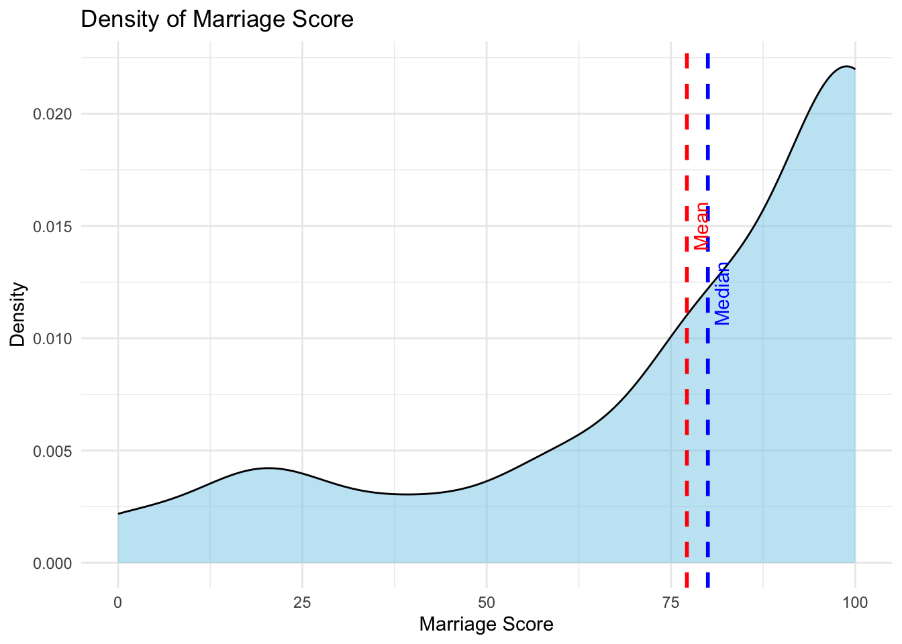
print(mean(clean_df_with$MARRIAGE))
[1] 77.15789
print(median(clean_df_with$MARRIAGE))
[1] 80
When we look at the distribution and density of the Marriage Scores, a significant portion of the scores lie within the range of 70 to 100. The mean score across all regions being 77.2 and the median being 80.
# look up table for region abbreviationsregion_labels <-c("East Asia & Pacific"="EAP","Europe & Central Asia"="ECA","High income: OECD"="HIC","Latin America & Caribbean"="LAC","Middle East & North Africa"="MENA","South Asia"="SA","Sub-Saharan Africa"="SSA")
#compare marriage score across regionsggplot(clean_df, aes(x = Region, y = MARRIAGE, fill = Region)) +geom_boxplot() +scale_x_discrete(labels = region_labels) +theme(axis.text.x =element_text(angle =45, hjust =1)) +labs(title ="Marriage Scores by Region", x ="Region", y ="Marriage Score")
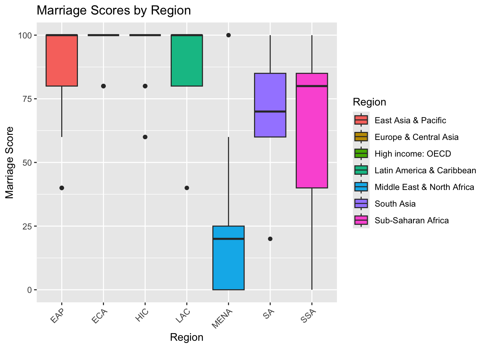
The High Income group has the highest marriage score, which is tightly clustered around 100 with no significant variability. This indicates consistent gender equality in marriage within the countries included in this group. Sub-Saharan Africa has the widest range of scores, with outlier as low as zero and scores spread from 25 to 100. This is indicative of significant variability in marriage laws within this region. Middle East & North Africa’s score are generally low, with the median around 25 and some outliers. This suggests less gender equality in marriage-related laws in this region. South Asia’s scores are clustered between 50 and 100 with some variability which indicates mixed progress toward gender equality in marriage-related laws. East Asia & Pacific and Europe & Central Asia’s scores are consistently high, clustering around 100 - suggesting advanced gender equality in these regions’ marital laws. Latin America and Caribbean have a median score of about 75 which moderate variability. This indicates a mixed level of progress across this region as well.
# A tibble: 63 × 5
Region Indicator Response Count Proportion
<chr> <chr> <chr> <int> <dbl>
1 East Asia & Pacific Can.a.woman.be.head.of.househo… No 2 0.00211
2 East Asia & Pacific Can.a.woman.be.head.of.househo… Yes 23 0.0242
3 East Asia & Pacific Can.a.woman.obtain.a.judgment.… No 4 0.00421
4 East Asia & Pacific Can.a.woman.obtain.a.judgment.… Yes 21 0.0221
5 East Asia & Pacific Does.a.woman.have.the.same.rig… No 7 0.00737
6 East Asia & Pacific Does.a.woman.have.the.same.rig… Yes 18 0.0189
7 East Asia & Pacific Is.the.law.free.of.legal.provi… No 2 0.00211
8 East Asia & Pacific Is.the.law.free.of.legal.provi… Yes 23 0.0242
9 East Asia & Pacific Is.there.legislation.specifica… No 2 0.00211
10 East Asia & Pacific Is.there.legislation.specifica… Yes 23 0.0242
# ℹ 53 more rows
# look up table for marriage indicatorsmarriage_labels <-c("Is.the.law.free.of.legal.provisions.that.require.a.married.woman.to.obey.her.husband."="Obey Husband","Can.a.woman.be.head.of.household.in.the.same.way.as.a.man."="Head of Household","Is.there.legislation.specifically.addressing.domestic.violence."="Domestic Violence","Can.a.woman.obtain.a.judgment.of.divorce.in.the.same.way.as.a.man."="Judgment of Divorce","Does.a.woman.have.the.same.rights.to.remarry.as.a.man."="Remarriage Rights")unique(marriage_proportions$Indicator)
#visualize proportionsggplot(marriage_proportions, aes(x = Region, y = Proportion, fill = Response)) +geom_bar(stat ="identity", position ="fill") +facet_wrap(~Indicator, scales ="free", labeller =labeller(Indicator = marriage_labels)) +scale_x_discrete(labels = region_labels) +theme(axis.text.x =element_text(angle =45, hjust =1)) +labs(title ="Proportions of Yes/No Responses for Marriage Indicators By Region",x ="Region", y ="Proportion")
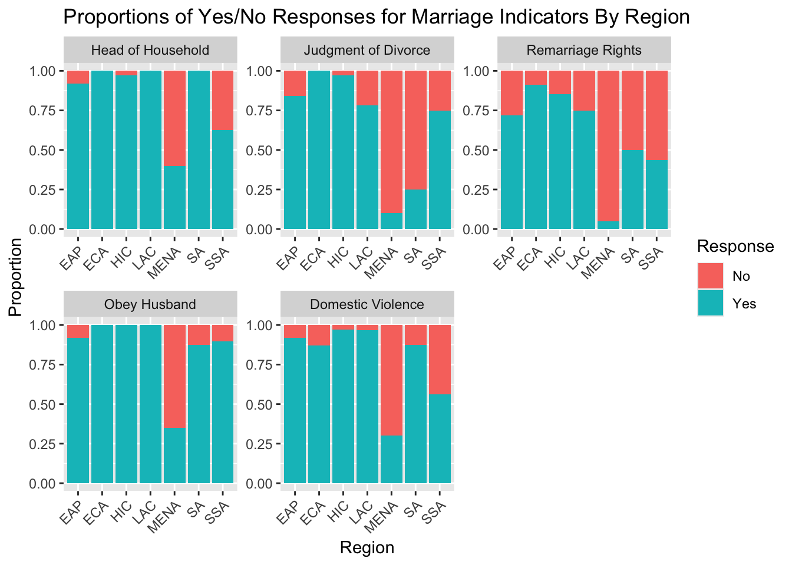
Head of Household: Most regions have a high proportion of “yes” response, indicating that women can generally be the head of housefold in the same way as men. However, for Sub-Saharan Africa and Middle East & North Africa, there are slighly lower proportions of “yes” responses, compared to the other regions, suggesting gender inequality in this area. Judgement of Divorce: High Income, Europe and Central Asia, and East Asia and Pacific have almost universal “yes” responses, indicating equitable divorce laws. Middle East & North Africa has a significant proportion of “no” reponses. This suggests women face legal barrier in divorce. Remarriage Rights: Similar trends to Judgement of Divorces. Obey Husband: Middle East & North Africa has a high proportion of ‘no’ responsesm which may indicate the existence of laws that require a married women to obey her husband while most other regions show “yes” responses, suggesting that such laws do not exist. Domestic Violence: High Income, Europe & Central Asia, and East Asia & Pacific show high yield of ‘yes’ responses, indicating legislation against domestic violence, which Middle East & North Africa, Sub-Saharan Africa, and South Asia show high yield of ‘no’ reponses, indicating weaker, or non-existent legislation in these regions.
#scatter plot for marriage score vs gpd per person employedggplot(clean_df, aes(x = MARRIAGE, y = gdp_per_person_employed)) +geom_point() +geom_smooth(method ="lm", color ="red") +theme_minimal() +labs(title ="Marriage Score vs GDP per Person Employed",x ="Marriage Score", y ="GDP per Person Employed")
`geom_smooth()` using formula = 'y ~ x'
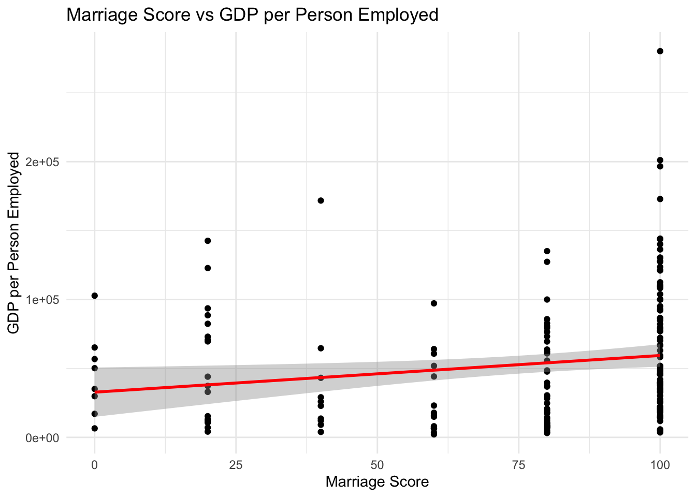
#scatter plot for marriage score vs gni per capitaggplot(clean_df, aes(x = MARRIAGE, y = GNI.per.capita)) +geom_point() +geom_smooth(method ="lm", color ="blue") +theme_minimal() +labs(title ="Marriage Score vs GNI per Capita",x ="Marriage Score", y ="GNI per Capita")
`geom_smooth()` using formula = 'y ~ x'
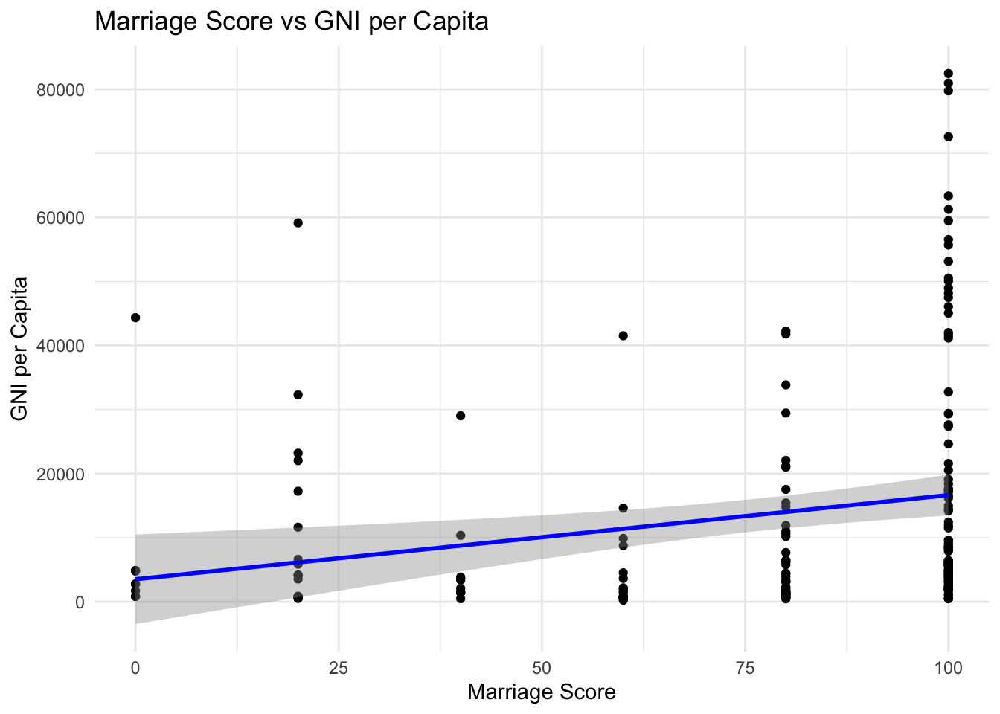
The scatterpkots depict the relationship between Marriage Score and GDP per Person Employed and GNI per Capita. Although the correlation line appears to slightly increase, looking at the points for the different regions, it is clear that there is much variability of marriage score when compared to GNI and GDP, shows by the spread of the points along the x-axis. This suggests that countries with similar GDP or GNI can have vastly different marriage scores, highlighting that economic outcomes alone may not fully explain differences in gender-related legal metrics. The minor slope of the libes and the spread of points suggest weak correlations. The marriage Score alone is not strongly predictive of either GDP per Person Employed or GNI per Capita, aligning with the earlier statistical findings.
# name vector for correlation matrixvariable_labels <-c("WBL.INDEX"="WBL Index","MOBILITY"="Mobility","WORKPLACE"="Workplace","PAY"="Pay","MARRIAGE"="Marriage","ENTREPRENEURSHIP"="Entrepreneurship","gdp_per_person_employed"="GDP per Person","GNI.per.capita"="GNI per Capita","Foreign_direct_investment"="FDI")
## correlation analysis - relationship between inequality and economic indicators#select relevant columnscor_data <- clean_df %>%select(WBL.INDEX, MOBILITY, WORKPLACE, PAY, MARRIAGE, ENTREPRENEURSHIP, gdp_per_person_employed, GNI.per.capita, Foreign_direct_investment)#compute correlation matrixcor_matrix <-cor(cor_data, use ="complete.obs", method ="spearman")print(cor_matrix)
the WBL Index has significant positive correlations with our selected variables. This suggests that as the overall WBL score increases, legal indicators in these areas also improve. (marriage shows a weaker correlation compared to other variables). GDP per Person Employed and GNI per Capita have weaker correlations with all variables including WBL Index. This emphasizes my previous findings that economic outcomes are not strongly tied to gender-related legal protections. FDI has low or negative correlations across the board. A strong cluster of positive correaltions exists among Mobility, Workplace, Pay, and Entrepreneurship, which suggests improvemtns in one area often accompany improvements in others.
summary(clean_df$WBL.INDEX)
Min. 1st Qu. Median Mean 3rd Qu. Max.
26.90 62.65 77.50 73.71 86.90 100.00
#convert WBL.INDEX from character to numericclean_df$WBL.INDEX <-as.numeric(as.character(clean_df$WBL.INDEX))
## t-test for group comparisons#group based on median index scoreclean_df_with$WBL_Group <-ifelse(clean_df_with$WBL.INDEX >=median(clean_df_with$WBL.INDEX, na.rm =TRUE), "High", "Low")clean_df_with$WBL_Group <-factor(clean_df_with$WBL_Group)unique(clean_df_with$WBL_Group)
#t test for gdp by wbl group with high income groupt_test_gdp_with <-t.test( gdp_per_person_employed ~ WBL_Group,data = clean_df_with)print("T-test for GDP by WBL Group with High Income Included:")
[1] "T-test for GDP by WBL Group with High Income Included:"
print(t_test_gdp_with)
Welch Two Sample t-test
data: gdp_per_person_employed by WBL_Group
t = 5.2056, df = 162.15, p-value = 5.786e-07
alternative hypothesis: true difference in means between group High and group Low is not equal to 0
95 percent confidence interval:
20241.14 44983.59
sample estimates:
mean in group High mean in group Low
69597.64 36985.28
#t test for gni by wbl groupt_test_gni_with <-t.test( GNI.per.capita ~ WBL_Group,data = clean_df_with)print("T-test for GNI by WBL Group with High Income Included:")
[1] "T-test for GNI by WBL Group with High Income Included:"
print(t_test_gni_with)
Welch Two Sample t-test
data: GNI.per.capita by WBL_Group
t = 5.9028, df = 128.59, p-value = 2.988e-08
alternative hypothesis: true difference in means between group High and group Low is not equal to 0
95 percent confidence interval:
9513.839 19107.507
sample estimates:
mean in group High mean in group Low
20801.737 6491.064
#t test for gdp by wbl group without high income groupt_test_gdp_without <-t.test( gdp_per_person_employed ~ WBL_Group,data = clean_df_without)print("T-test for GDP by WBL Group with High Income Excluded:")
[1] "T-test for GDP by WBL Group with High Income Excluded:"
print(t_test_gdp_without)
Welch Two Sample t-test
data: gdp_per_person_employed by WBL_Group
t = 0.65231, df = 152.99, p-value = 0.5152
alternative hypothesis: true difference in means between group High and group Low is not equal to 0
95 percent confidence interval:
-7392.797 14681.257
sample estimates:
mean in group High mean in group Low
41759.28 38115.05
#t test for gni by wbl groupt_test_gni_without <-t.test( GNI.per.capita ~ WBL_Group,data = clean_df_without)print("T-test for GNI by WBL Group with High Income Excluded: ")
[1] "T-test for GNI by WBL Group with High Income Excluded: "
print(t_test_gni_without)
Welch Two Sample t-test
data: GNI.per.capita by WBL_Group
t = 1.0437, df = 151.99, p-value = 0.2983
alternative hypothesis: true difference in means between group High and group Low is not equal to 0
95 percent confidence interval:
-1564.166 5067.276
sample estimates:
mean in group High mean in group Low
8516.299 6764.744
To create the WBL Groups, I calculated the median WBL Index Score, then the countries with below the median were classified as “Low” and the countries above the median were classified as “High”. In the t-test including the High Income group, there is a statistically significant difference in GDP per Person Employed and GNI per capita between the High and Low WBL groups. However, when we excluded the High Income group, there was no significant difference in GDP per Person Employed or GNI per Capita between the High and Low WBL groups. This indicates that the High Income group is driving the observed differences, which may suggest High Income nations disproportionarely influence global trends.
##chi-square test#create contingency table and run test#with high incomechi_table_with <-table(clean_df_with$WBL_Group, clean_df_with$Region)chi_test_with <-chisq.test(chi_table_with)
Warning in chisq.test(chi_table_with): Chi-squared approximation may be
incorrect
#without high incomechi_table_without <-table(clean_df_without$WBL_Group, clean_df_without$Region)chi_test_without <-chisq.test(chi_table_without)
Warning in chisq.test(chi_table_without): Chi-squared approximation may be
incorrect
#resultsprint("Chi-square Test with High Income Group Included:")
[1] "Chi-square Test with High Income Group Included:"
Both tests have extremely small p-values, indicating strong evidence to reject the null hypothesis. The inclusion of the High Income group has a significant impact on the test statistic and degrees of freedom. Within the test with the High Income group included, he chi-squared statistic is much higher. This is likely due to the disproportionate representation of countries with high WBL scores in that group, adding more variability to the analysis as a whole. Without the High Income group, the association remains significant but the test statistic is smaller. This could indicate that removing the High Income group results in fewer extreme differences between observed and expected values. It is important to note that the warning suggests that some frequencies might be too small to trust the approximation fully, which is why I also used the Monte Carlo simulation.
##visualize the contingency table#convert table to data framechi_df_with <-as.data.frame(chi_table_with)colnames(chi_df_with) <-c("WBL_Group", "Region", "Count")chi_df_without <-as.data.frame(chi_table_without)colnames(chi_df_without) <-c("WBL_Group", "Region", "Count")#bar plotggplot(chi_df_with, aes(x = Region, y = Count, fill = WBL_Group)) +geom_bar(stat ="identity", position ="dodge") +labs(title ="Distribution of WBL Groups by Region", x ="Region", y ="Count") +scale_x_discrete(labels = region_labels) +theme(axis.text.x =element_text(angle =45, hjust =1))
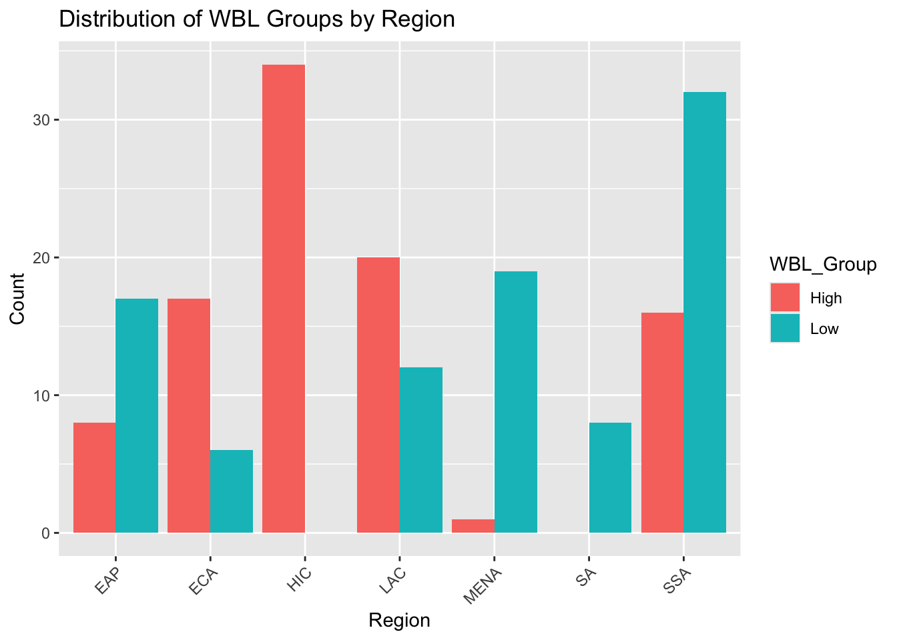
ggplot(chi_df_without, aes(x = Region, y = Count, fill = WBL_Group)) +geom_bar(stat ="identity", position ="dodge") +labs(title ="Distribution of WBL Groups by Region", x ="Region", y ="Count") +scale_x_discrete(labels = region_labels) +theme(axis.text.x =element_text(angle =45, hjust =1))
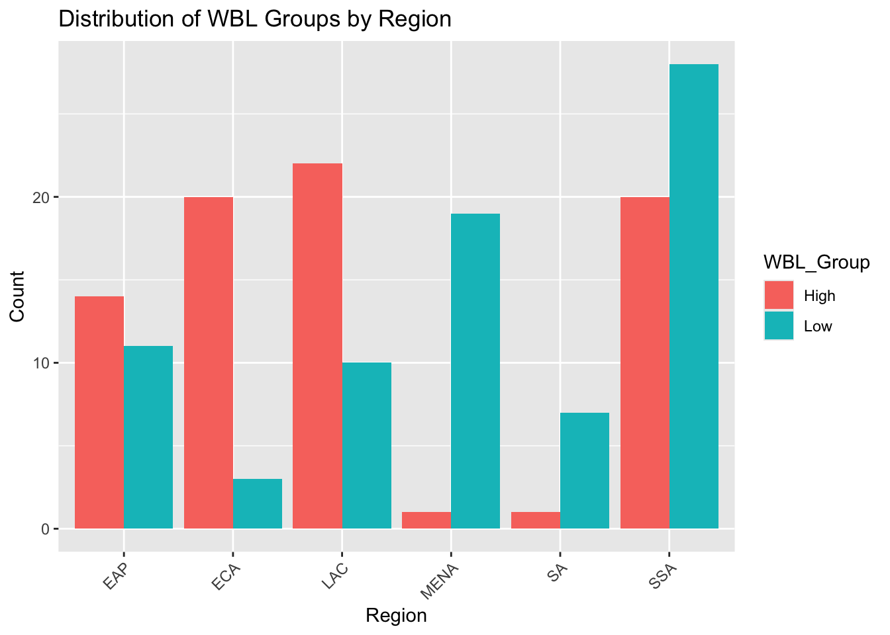
## permutation test#observed difference in gdp means with high incomeobserved_diff_with <-mean(clean_df_with$gdp_per_person_employed[clean_df_with$WBL_Group =="High"], na.rm =TRUE) -mean(clean_df_with$gdp_per_person_employed[clean_df_with$WBL_Group =="Low"], na.rm =TRUE)#permutation testperm_diff_with <-replicate(10000, { permuted_with <-sample(clean_df_with$WBL_Group)mean(clean_df_with$gdp_per_person_employed[permuted_with =="High"], na.rm =TRUE) -mean(clean_df_with$gdp_per_person_employed[permuted_with =="Low"], na.rm =TRUE)})print("Permutation Test Results including High Income Group:")
[1] "Permutation Test Results including High Income Group:"
#calculate p valuep_value_with <-mean(abs(perm_diff_with) >=abs(observed_diff_with))print(p_value_with)
The p-value for the test including the High Income Group indicates that none of the permutations produced a difference as extreme as the observed difference. This suggests that there is a significant relationship between the WBL group and the GDP when the High Income group is included. Also, the large observed difference further supports this results by highlighting that countries in the “High” WBL group have substantially higher GDP per person employed compared to those in the “Low” group. On the other hand, the p-value for test excluding the High Income group indicates no significant relationship between the WBL group and GDP. The observed difference of 1,650.767 is relatively low, which suggests that the distinction between “High” and “Low” WBL groups in terms of GDP becomes insignificant once the High Income countries are removed.
## monte carlo simulation#function to simulation gdp based on wbl indexsimulation_gdp <-function(data, n_sim) { results <-replicate(n_sim, {#sample wbl index values with replacement sampled_index <-sample(data$WBL.INDEX, size =nrow(data), replace =TRUE)#simulate gdp (linear model with noise) simulated_gdp <-500* sampled_index +rnorm(nrow(data), mean =0, sd =10000)mean(simulated_gdp) #return mean gdp for simulation })return(results)}#simulate for both datasetsgdp_with <-simulation_gdp(clean_df_with, 10000)gdp_without <-simulation_gdp(clean_df_without, 10000)#summarize resultsprint("Monte Carlo Including High Income Group:")
[1] "Monte Carlo Including High Income Group:"
summary(gdp_with)
Min. 1st Qu. Median Mean 3rd Qu. Max.
32830 36189 36868 36860 37535 40152
print("Monte Carlo Excluding High Income Group:")
[1] "Monte Carlo Excluding High Income Group:"
summary(gdp_without)
Min. 1st Qu. Median Mean 3rd Qu. Max.
30859 33929 34628 34628 35340 38670
##visualize to compare monte carlo results#combine results into dfsimulation_results <-data.frame(GDP =c(gdp_with, gdp_without),Dataset =rep(c("With High Income", "Without High Income"), each =10000))#density plotggplot(simulation_results, aes(x = GDP, fill = Dataset)) +geom_density(alpha =0.5) +labs(title ="Simulated GDP Distributions", x ="GDP", y ="Density")
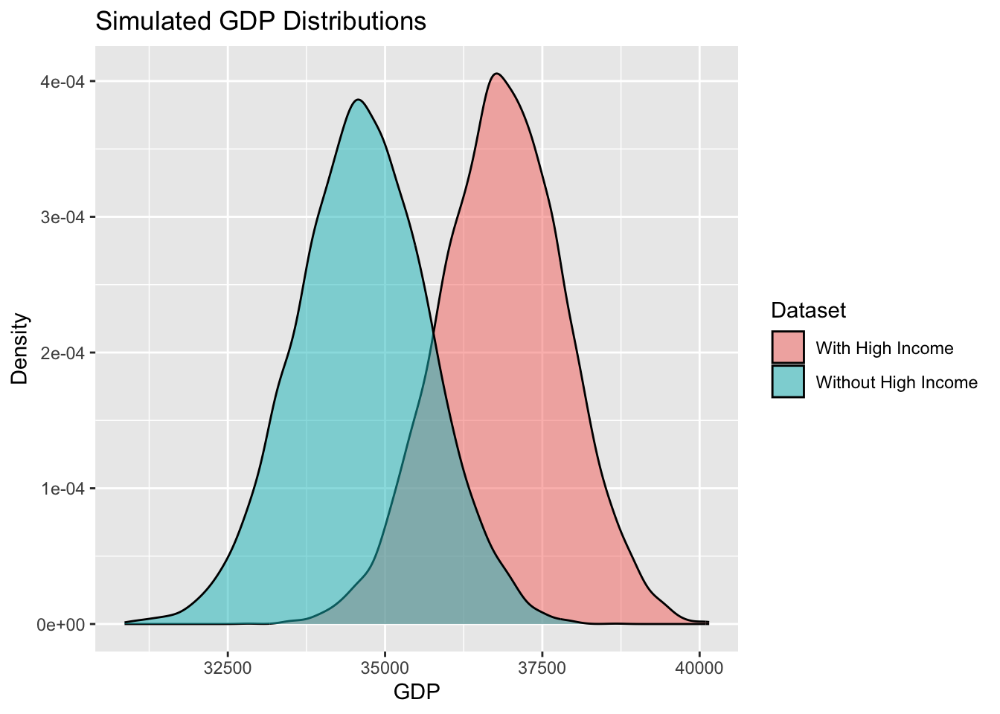
the distribution including the High Income group has a higher central tendency (median and mean) compared to the dataset without the High Income group. Even thought the quartiles of the two distributions do not drastically differ, the inclusion of the high income group result in statistical significance, likely due to the overall higher GDP values and their concentration in the “High” WBL group. This inflates the observed difference in means between the groups.
## scatter plot with regression line to show lack of correlation between GDP and WBL Scoreggplot(clean_df_with, aes(x = WBL.INDEX, y = gdp_per_person_employed)) +geom_point(alpha =0.6) +geom_smooth(method ="lm", se =FALSE, color ="blue") +labs(title ="Relationship Between WBL Score and GDP (With High Income)",x ="WBL Score",y ="GDP per Person Employed" ) +theme_minimal()
`geom_smooth()` using formula = 'y ~ x'
Warning: Removed 1 row containing non-finite outside the scale range
(`stat_smooth()`).
Warning: Removed 1 row containing missing values or values outside the scale range
(`geom_point()`).
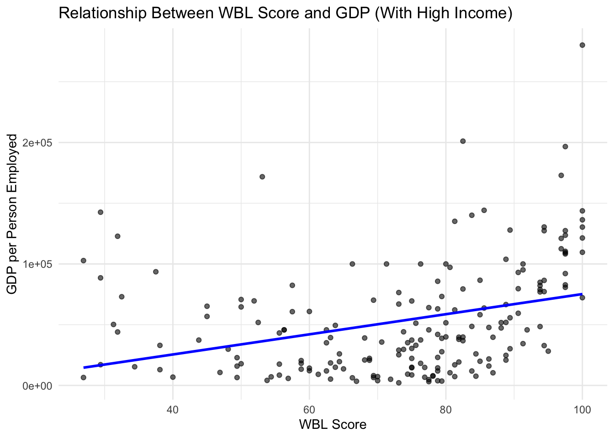
ggplot(clean_df_without, aes(x = WBL.INDEX, y = gdp_per_person_employed)) +geom_point(alpha =0.6) +geom_smooth(method ="lm", se =FALSE, color ="blue") +labs(title ="Relationship Between WBL Score and GDP (Without High Income)",x ="WBL Score",y ="GDP per Person Employed" ) +theme_minimal()
`geom_smooth()` using formula = 'y ~ x'
Warning: Removed 1 row containing non-finite outside the scale range (`stat_smooth()`).
Removed 1 row containing missing values or values outside the scale range
(`geom_point()`).
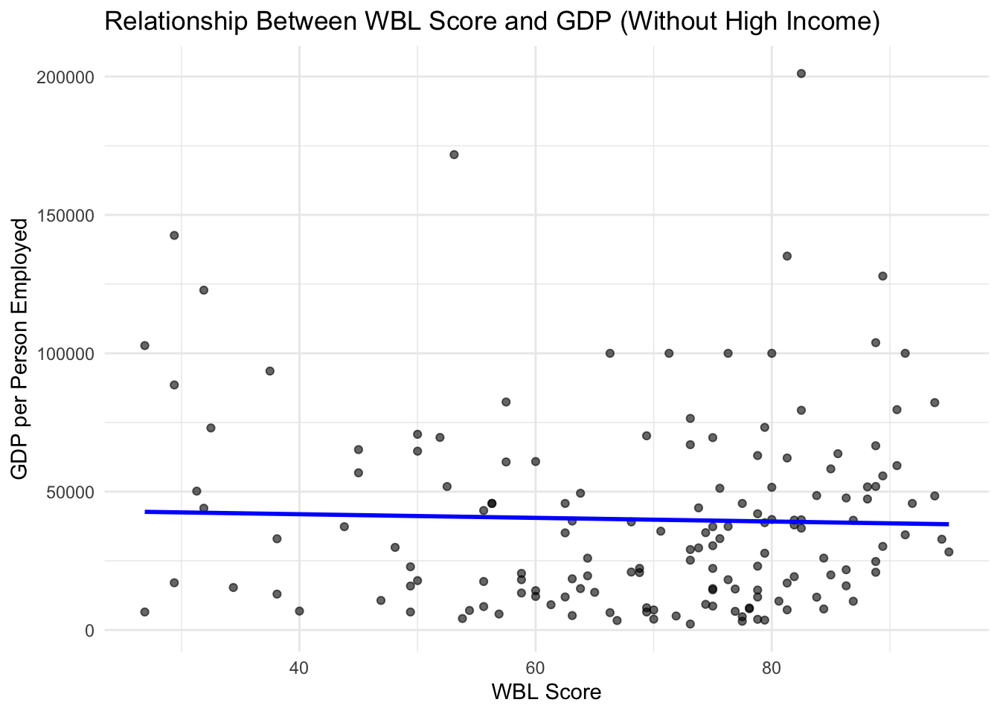
While a higher WBL score may correlate slightly with higher GDP, outliers (high income group) are what is significantly driving the relationship - which is made evident by the shallow slope in the regression line. Variability suggests that cultural, political, and historical factors may play a more significant role in predicting economic success.
ggplot(clean_df_without, aes(x = WBL.INDEX, y = GNI.per.capita)) +geom_point(alpha =0.6) +geom_smooth(method ="lm", se =FALSE, color ="red") +labs(title ="Relationship Between WBL Score and GNI (With High Income)",x ="WBL Score",y ="GDP per Person Employed" ) +theme_minimal()
`geom_smooth()` using formula = 'y ~ x'
Warning: Removed 1 row containing non-finite outside the scale range
(`stat_smooth()`).
Warning: Removed 1 row containing missing values or values outside the scale range
(`geom_point()`).
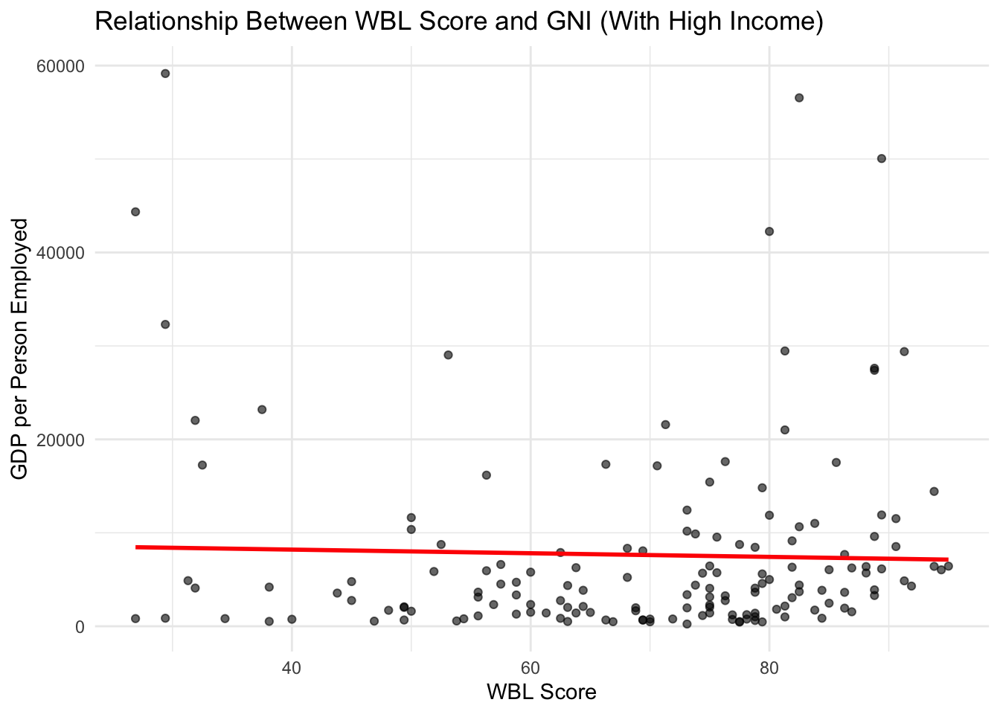
ggplot(clean_df_without, aes(x = WBL.INDEX, y = GNI.per.capita)) +geom_point(alpha =0.6) +geom_smooth(method ="lm", se =FALSE, color ="red") +labs(title ="Relationship Between WBL Score and GNI (Without High Income)",x ="WBL Score",y ="GDP per Person Employed" ) +theme_minimal()
`geom_smooth()` using formula = 'y ~ x'
Warning: Removed 1 row containing non-finite outside the scale range (`stat_smooth()`).
Removed 1 row containing missing values or values outside the scale range
(`geom_point()`).
# Filter rows where GNI or GDP data is missingmissing_countries <- economic_indicators %>%filter(is.na(GNI.per.capita) |is.na(gdp_per_person_employed)) %>%select(Country.Name, GNI.per.capita, gdp_per_person_employed)# Display the resultmissing_countries
Country.Name GNI.per.capita gdp_per_person_employed
1 Aruba 28910 NA
2 Andorra NA NA
3 American Samoa NA NA
4 Antigua and Barbuda 17330 NA
5 Bermuda 117000 NA
6 Channel Islands NA NA
7 Cuba 8630 NA
8 Curacao 18820 NA
9 Cayman Islands 58820 NA
10 Dominica 7890 NA
11 Eritrea NA NA
12 Faroe Islands 62940 NA
13 Micronesia, Fed. Sts. 3350 NA
14 Gibraltar NA NA
15 Grenada 8750 NA
16 Greenland NA NA
17 Guam NA NA
18 Isle of Man 83460 NA
19 Not classified NA NA
20 Kiribati 3260 NA
21 St. Kitts and Nevis 21580 NA
22 Liechtenstein NA NA
23 St. Martin (French part) NA NA
24 Monaco NA NA
25 Marshall Islands 5940 NA
26 Northern Mariana Islands NA NA
27 New Caledonia NA NA
28 Nauru 12260 NA
29 Palau 16170 NA
30 Korea, Dem. People's Rep. NA NA
31 French Polynesia NA NA
32 San Marino 42250 NA
33 South Sudan NA NA
34 Sint Maarten (Dutch part) 31760 NA
35 Seychelles 17620 NA
36 Turks and Caicos Islands 26600 NA
37 Turkmenistan 6500 NA
38 Tuvalu 6160 NA
39 Venezuela, RB NA NA
40 British Virgin Islands NA NA
41 Virgin Islands (U.S.) NA 112991.1
42 Kosovo 4300 NA
43 Yemen, Rep. 820 NA
ggplot(clean_df, aes(x = Region, y = gdp_per_person_employed)) +geom_bar(stat ="identity", fill ="#2D7DB4") +labs(title ="GDP ($) by Region", x ="Region", y ="GDP $ (US Dollars)") +theme(plot.title =element_text(hjust=0.5)) +scale_x_discrete(labels = region_labels) +theme(axis.text.x =element_text(angle =45, hjust =1))
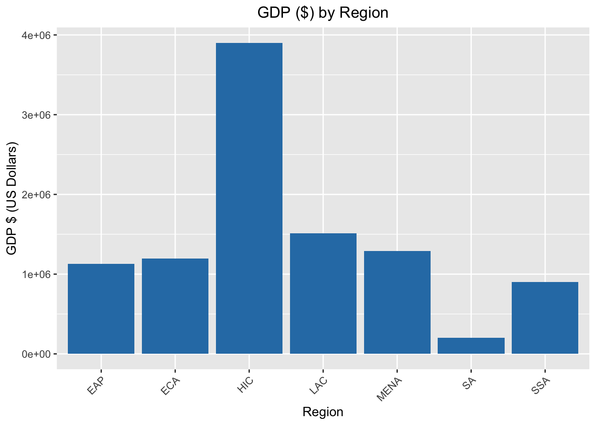
ggplot(clean_df_with, aes(x = WBL.INDEX)) +geom_density(fill ='lightpink', color ="black") +geom_vline(aes(xintercept =median(WBL.INDEX, na.rm =TRUE)), color ="blue", linetype ="dashed", linewidth =1) +theme(plot.title =element_text(hjust=0.5)) +labs(title ="Density of WBL Scores With High-Income Group", x ="WBL Score", y ="Density") +annotate("text", x =median(clean_df_with$WBL.INDEX, na.rm =TRUE), y =0.012, label ="Median", color ="blue", angle =90, vjust =1.5)
ggplot(clean_df_without, aes(x = WBL.INDEX)) +geom_density(fill ='lightblue', color ="black") +geom_vline(aes(xintercept =median(WBL.INDEX, na.rm =TRUE)), color ="blue", linetype ="dashed", linewidth =1) +theme(plot.title =element_text(hjust=0.5)) +labs(title ="Density of WBL Scores Without High-Income Group", x ="WBL Score", y ="Density") +annotate("text", x =median(clean_df_without$WBL.INDEX, na.rm =TRUE), y =0.012, label ="Median", color ="blue", angle =90, vjust =1.5)